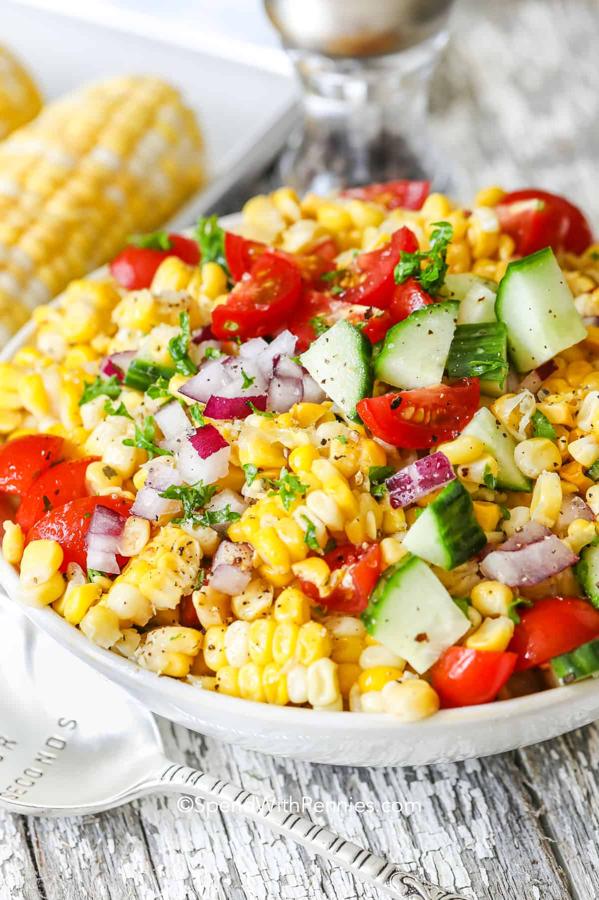

Corn Salad
This refreshing corn salad is perfect for a light and healthy meal. It's made with fresh corn, cherry tomatoes, cucumber, red onion, and cilantro, all tossed in a zesty lime dressing. Serve it as a side dish or a light lunch.
Ingredients:
- 2 cups fresh corn kernels
- 1 cup cherry tomatoes, halved
- 1 cucumber, diced
- 1/4 cup red onion, finely chopped
- 1/4 cup fresh cilantro, chopped
- Juice of 1 lime
- 2 tablespoons olive oil
- Salt and pepper to taste
Instructions:
- In a large bowl, combine the corn, cherry tomatoes, cucumber, red onion, and cilantro.
- In a small bowl, whisk together the lime juice, olive oil, salt, and pepper.
- Pour the dressing over the corn mixture and toss to combine.
- Chill in the refrigerator for at least 30 minutes before serving.

Creamy Corn Soup
This creamy corn soup is a comforting and nutritious meal. It's made with fresh corn, potatoes, onions, and vegetable broth, blended until smooth and creamy. Top it with some chopped chives for added flavor.
Ingredients:
- 3 cups fresh corn kernels
- 2 large potatoes, peeled and diced
- 1 onion, chopped
- 3 cups vegetable broth
- 1 cup milk or coconut milk
- Salt and pepper to taste
- Chopped chives for garnish
Instructions:
- In a large pot, sauté the onions until translucent.
- Add the corn and potatoes, and sauté for another 5 minutes.
- Pour in the vegetable broth and bring to a boil. Reduce heat and simmer until the potatoes are tender.
- Using an immersion blender, puree the soup until smooth and creamy.
- Stir in the milk and season with salt and pepper.
- Serve hot, garnished with chopped chives.
Corn Fritters
These crispy corn fritters are a delicious and wholesome snack. They are made with fresh corn, flour, eggs, and spices, then pan-fried until golden brown. Enjoy them with a dipping sauce or as a side dish.
Ingredients:
- 2 cups fresh corn kernels
- 1/2 cup all-purpose flour
- 2 eggs
- 1/4 cup milk
- 1/4 teaspoon baking powder
- 1/2 teaspoon paprika
- 1/4 teaspoon cayenne pepper (optional)
- Salt and pepper to taste
- Vegetable oil for frying
Instructions:
- In a large bowl, whisk together the flour, eggs, milk, baking powder, paprika, cayenne pepper, salt, and pepper.
- Stir in the corn kernels until well combined.
- Heat vegetable oil in a pan over medium heat.
- Scoop spoonfuls of the corn mixture into the hot oil and flatten slightly with the back of the spoon.
- Fry the fritters until golden brown on both sides, about 3-4 minutes per side.
- Remove from the pan and drain on a paper towel.
- Serve hot with your favorite dipping sauce.